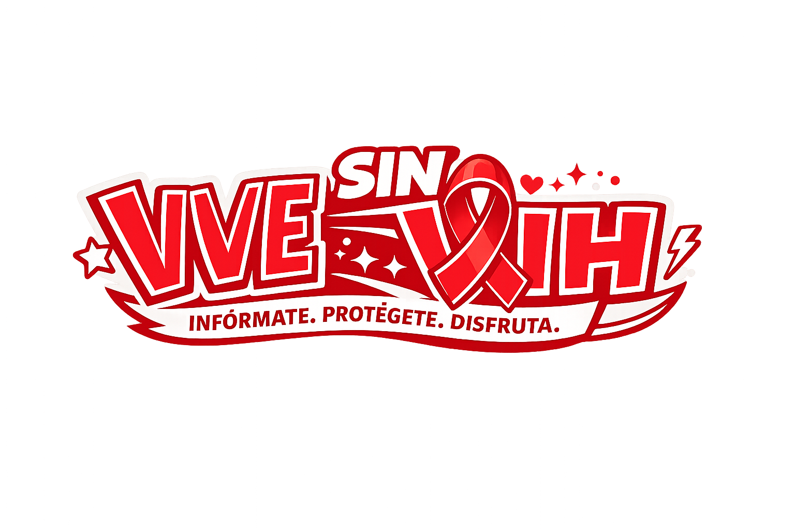
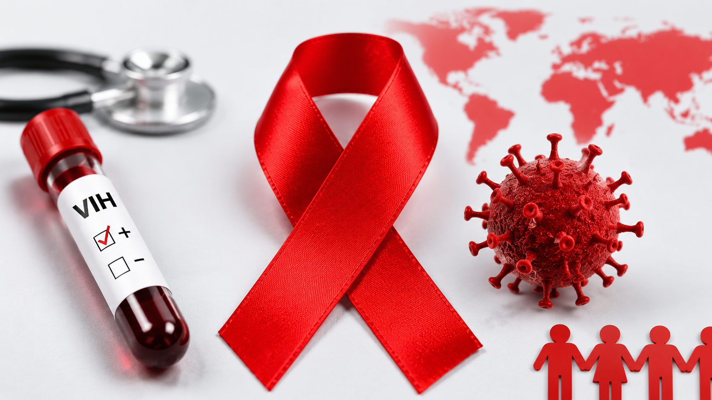
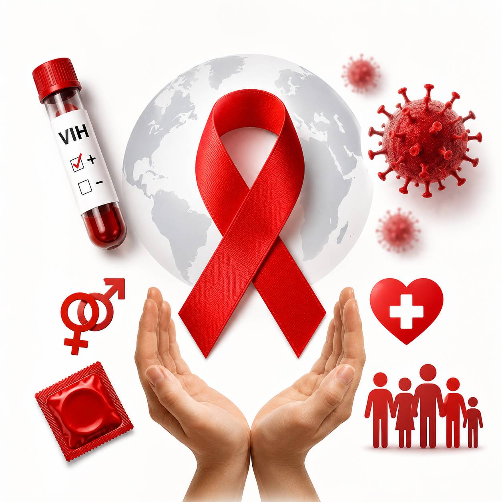
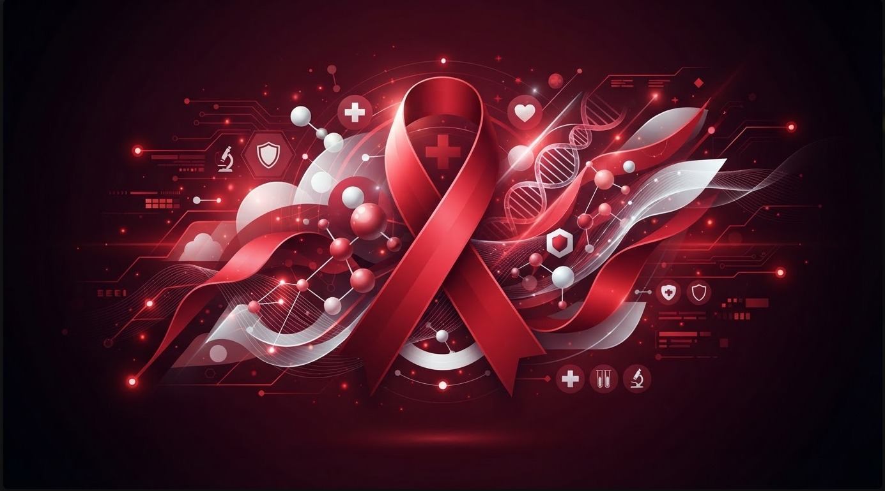
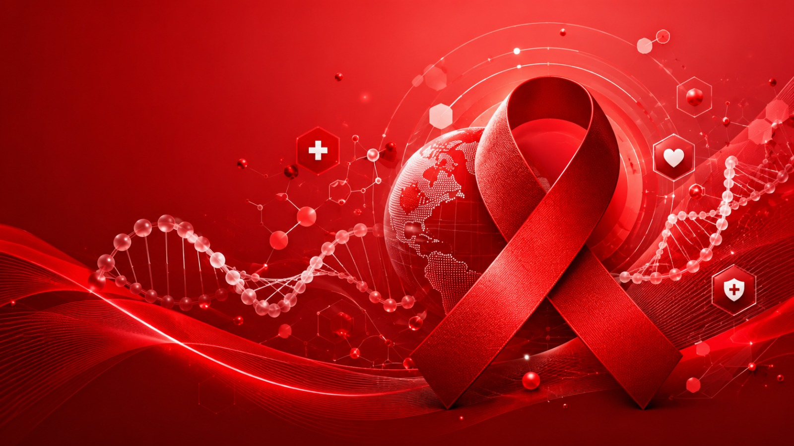
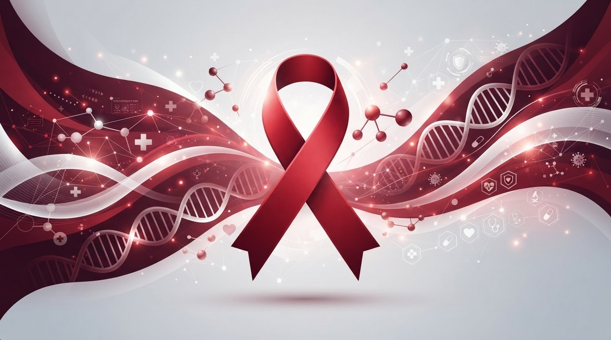
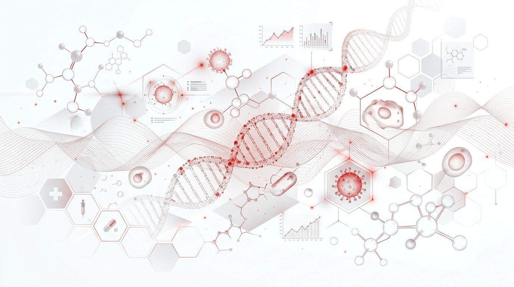

¿Que debe saber sobre el VIH?
Informacion sobre el VIH para jovenes Colombianos

¿Que es el VIH?

¿Como prevenirlo?

Informacion sobre el VIH para jovenes Colombianos






Fundación prevención VIH - Colombia
Fundación prevención VIH - Colombia
Fundación prevención VIH - Colombia
Fundación prevención VIH - Colombia